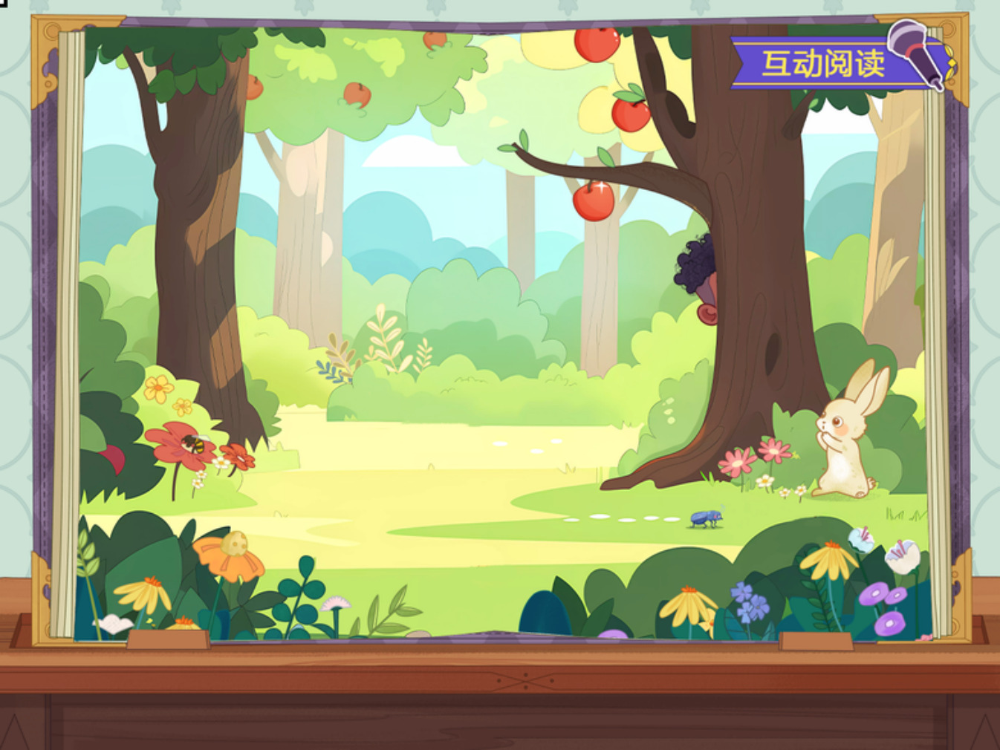
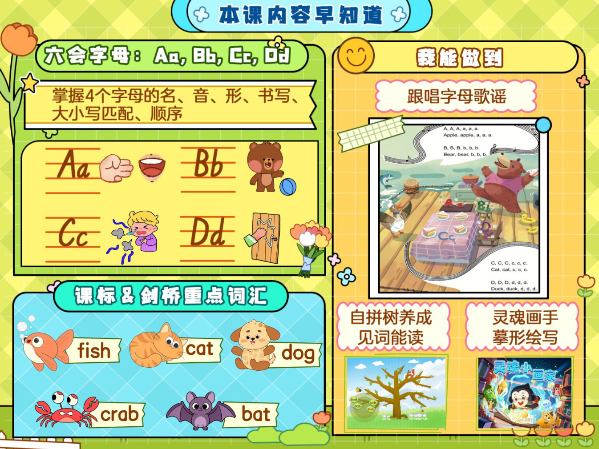
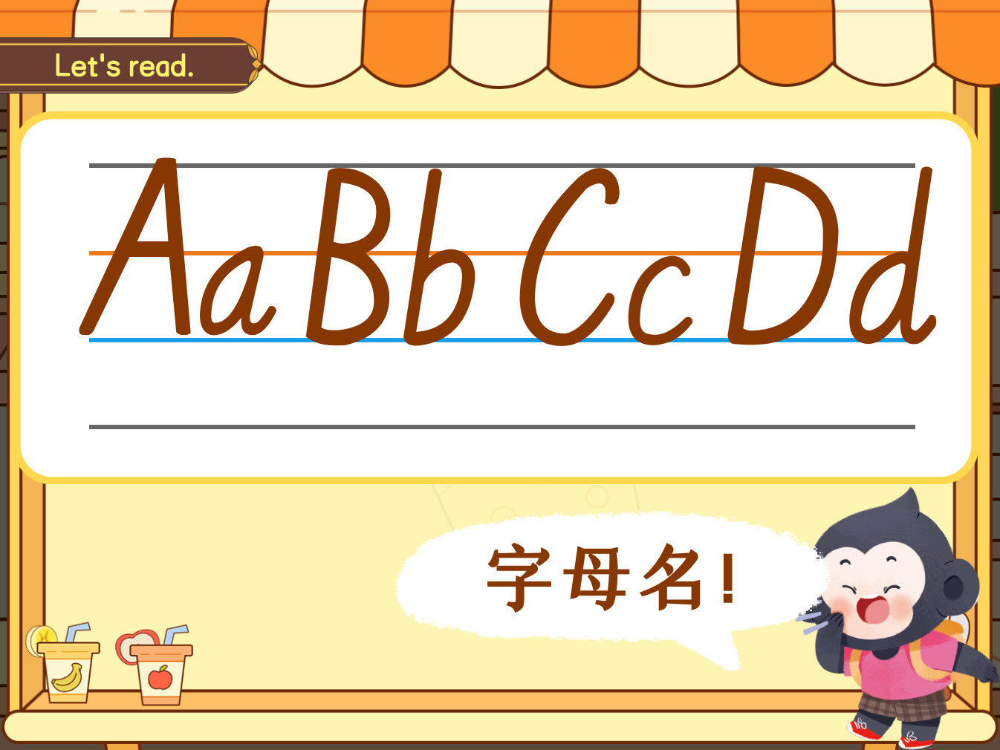
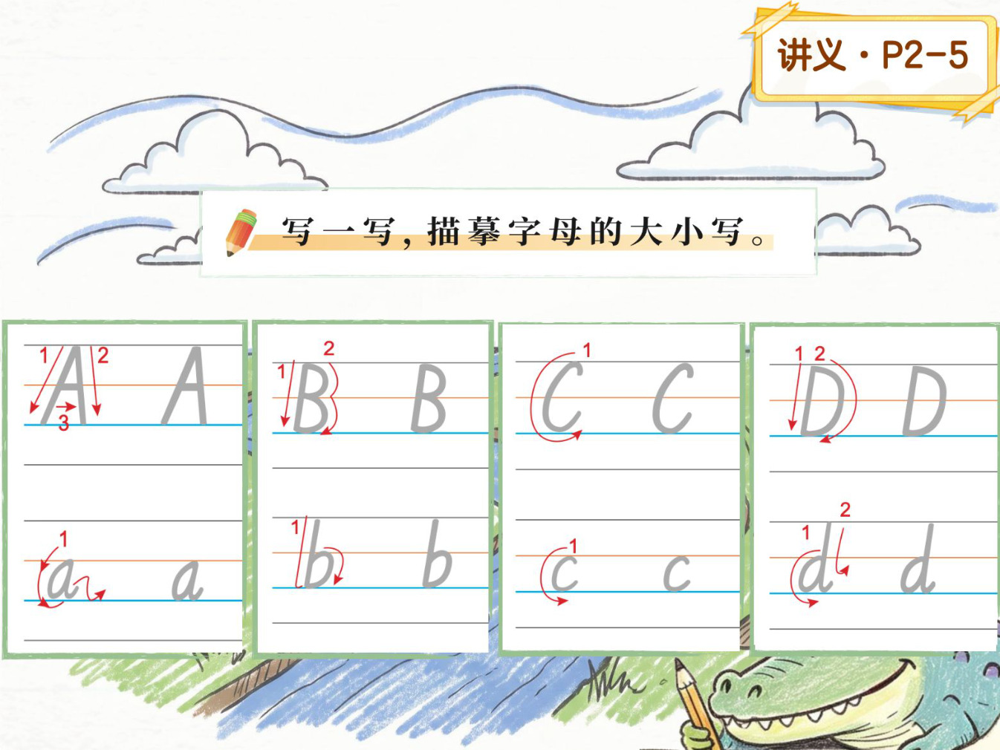
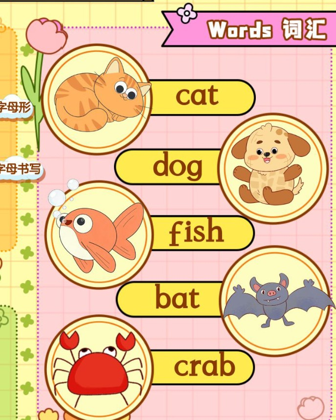
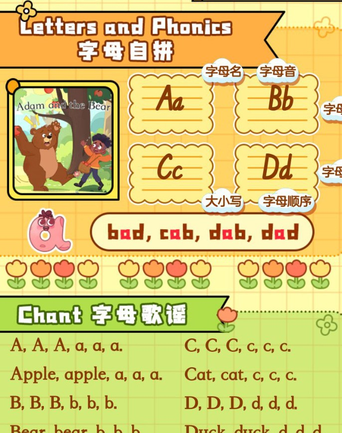
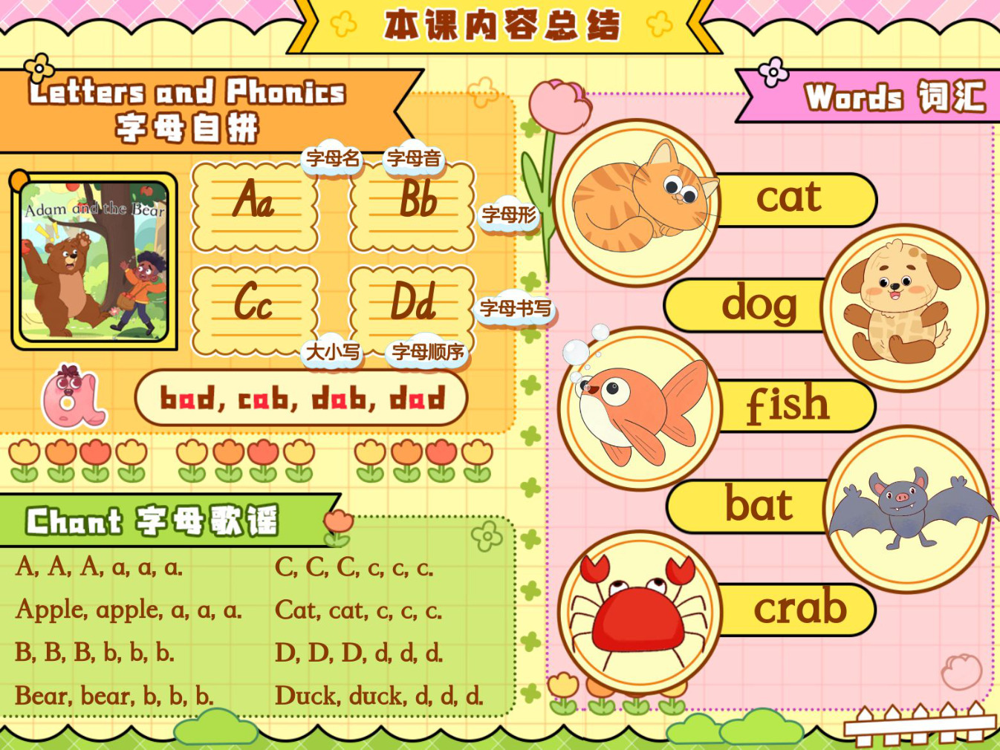

05 · PICTURE STORY
走进森林，故事开始了。
点图片上的喇叭逐页听。英文原句按课件标出；场景说明只是看图提示。

Lesson 01 双新阅读表达 · Level 2
跟着 Adam 走进森林，认识 Aa–Dd，听懂故事，大声读出来。

Aa–Dd今天，和森林里的
新朋友打个招呼。
MY JOURNEY
0 / 9 个学习环节已完成
LESSON MAP 01
每个段落都可以单独点读，也可以跟着播放条连续听。
01 · LETTERS & PHONICS
先听字母名，再听字母音。注意嘴形，跟着音频读三遍。

LET'S READ
02 · WORDS
先认 5 个核心词，再读 10 个拼读词。同一个词在本页只出现一次。
CORE VOCABULARY
点一下卡片，听单词，再看音标和中文意思。
PHONICS WORD BANK


03 · SENTENCES
前三句是自我介绍替换练习，后六句来自本课故事和互动页。
04 · CHANT
每首两句。先慢读，再跟着节奏拍手，最后试着不看文字唱出来。
05 · PICTURE STORY
点图片上的喇叭逐页听。英文原句按课件标出；场景说明只是看图提示。

06 · PRACTICE
练习结果只保存在当前设备，不需要登录。完成一项，点亮一片叶子。
1 / 3
准备好了吗？点上方按钮播放。
进度自动保存在本机浏览器。
